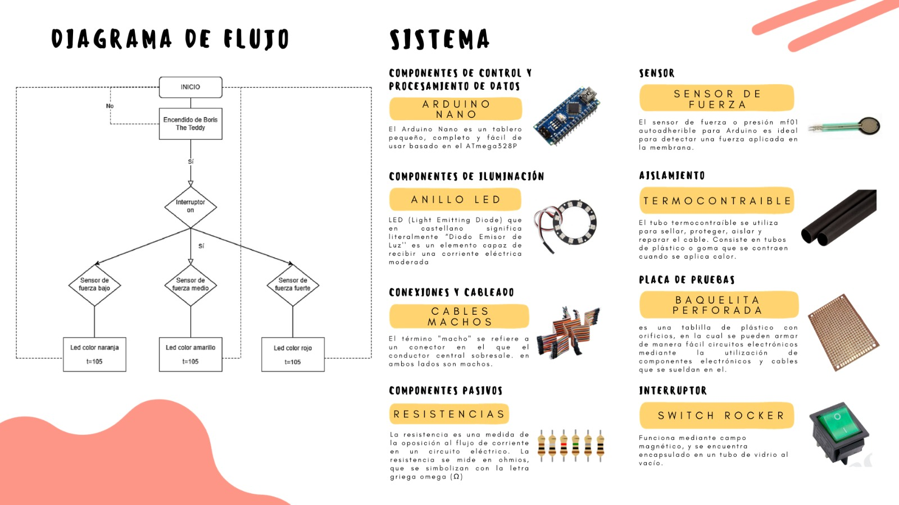
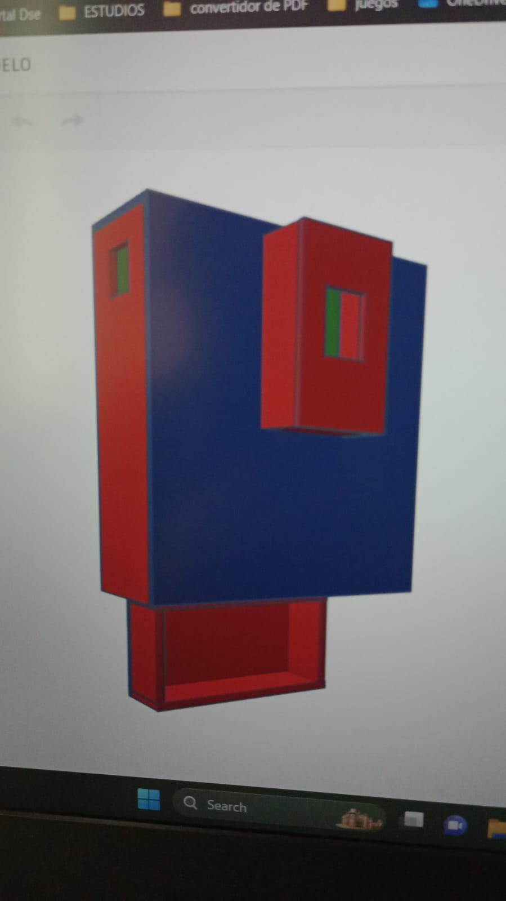
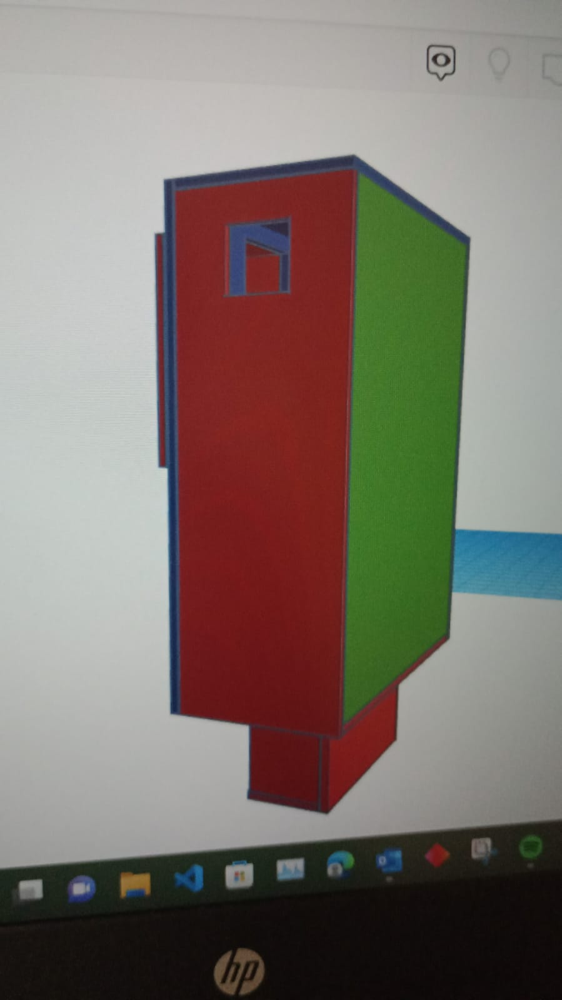
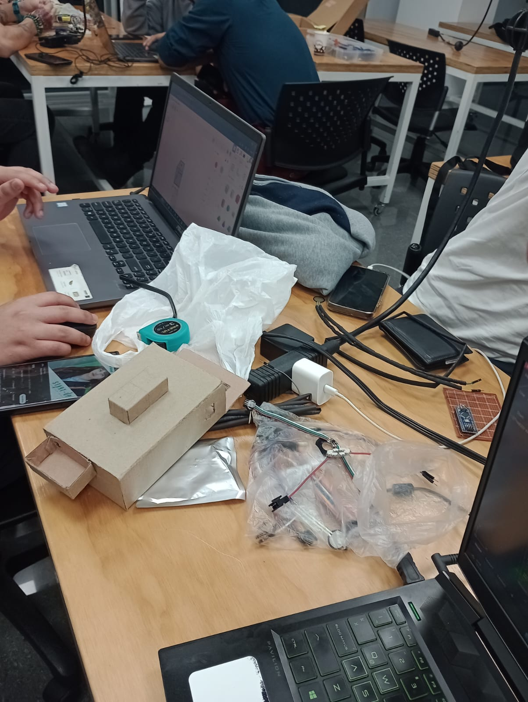
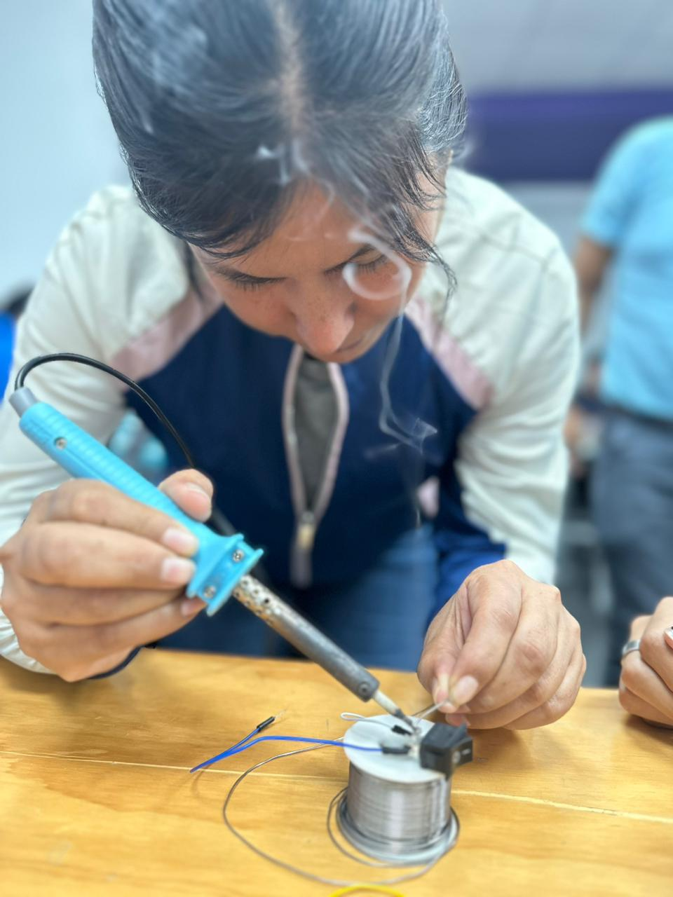
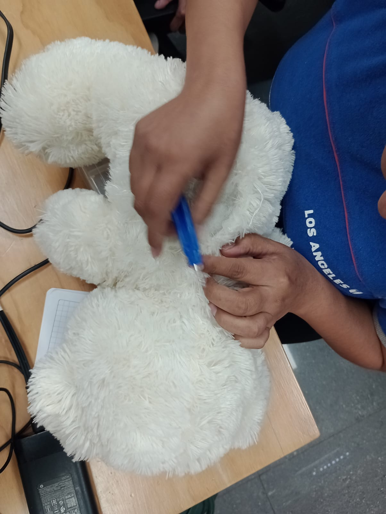
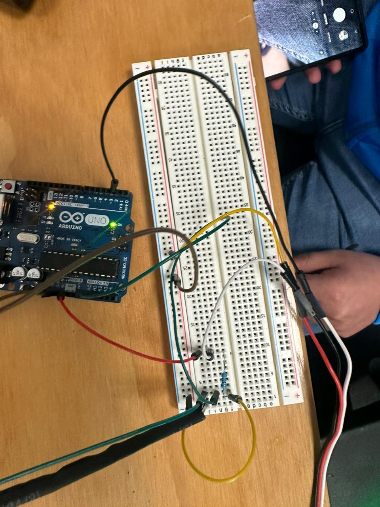
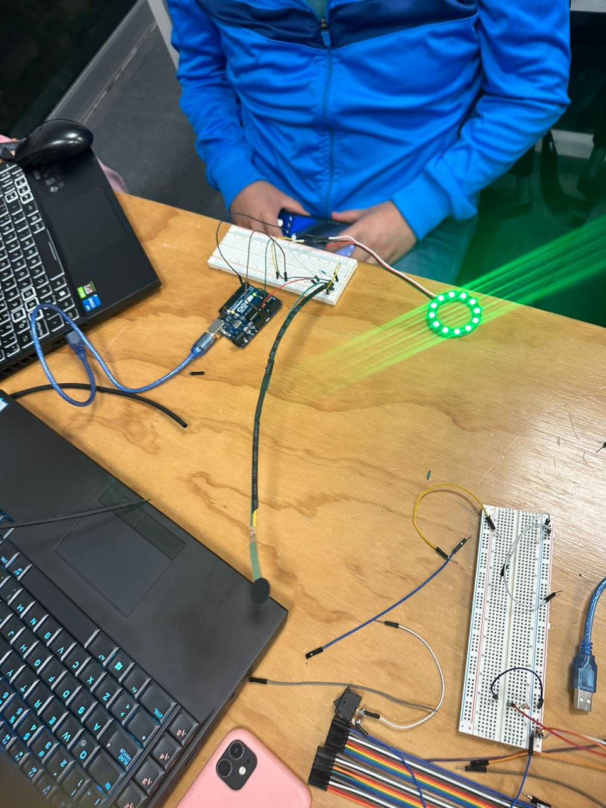
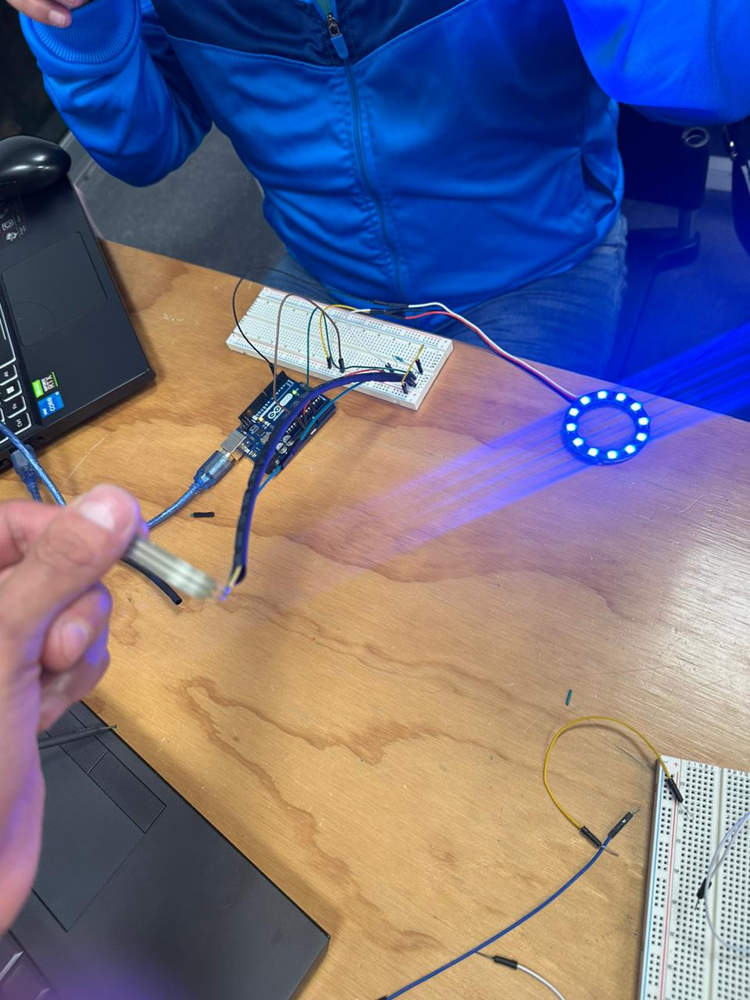
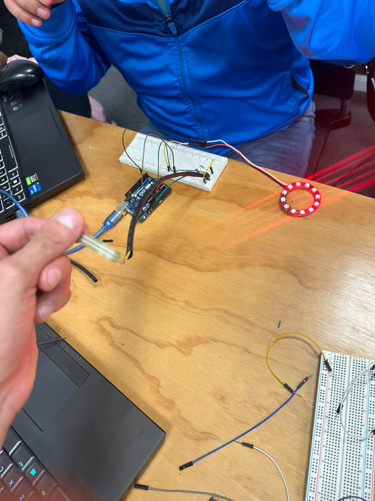

CONTRUCCION DEL PROYECTO
Donec eget ex magna. Interdum et malesuada fames ac ante ipsum primis in faucibus. Pellentesque venenatis dolor imperdiet dolor mattis sagittis. Praesent rutrum sem diam, vitae egestas enim auctor sit amet. Pellentesque leo mauris, consectetur id ipsum sit amet, fergiat. Pellentesque in mi eu massa lacinia malesuada et a elit. Donec urna ex, lacinia in purus ac, pretium pulvinar mauris. Curabitur sapien risus, commodo eget turpis at, elementum convallis elit. Pellentesque enim turpis, hendrerit tristique.
CODIFICACION
#include < Adafruit_NeoPixel.h>
#define PIN 2
#define NUMPIXELS 12
Adafruit_NeoPixel pixels(NUMPIXELS, PIN, NEO_GRB + NEO_KHZ800);
void setup() {
// initialize serial communication at 9600 bits per second:
Serial.begin(9600);
pixels.begin(); // INITIALIZE NeoPixel strip object (REQUIRED)
for(int i=0; i < NUMPIXELS; i++) { // For each pixel...
pixels.setPixelColor(i, pixels.Color(0, 0, 0));
pixels.show(); // Send the updated pixel colors to the hardware.
delay(10); // Pause before next pass through loop
}
}
// the loop routine runs over and over again forever:
void loop() {
// read the input on analog pin 0:
int sensor = analogRead(A0);
Serial.println(sensor);
delay(1);
if(sensor>35 && sensor < 200){//primer color
sensor=0;
pixels.clear();
for(int i=0; i < NUMPIXELS; i++) { // For each pixel...
pixels.setPixelColor(i, pixels.Color(0, 255, 0));
pixels.show(); // Send the updated pixel colors to the hardware.
delay(10); // Pause before next pass through loop
}
}
if(sensor > 200 && sensor < 400){//segundo color
sensor=0;
pixels.clear();
for(int i=0; i < NUMPIXELS; i++) { // For each pixel...
pixels.setPixelColor(i, pixels.Color(255, 0, 0));
pixels.show(); // Send the updated pixel colors to the hardware.
delay(10); // Pause before next pass through loop
}
}
if(sensor > 400 && sensor < 1023){//tercer color
sensor=0;
pixels.clear();
for(int i=0; i < NUMPIXELS; i++) { // For each pixel...
pixels.setPixelColor(i, pixels.Color(0, 0, 255));
pixels.show(); // Send the updated pixel colors to the hardware.
delay(10); // Pause before next pass through loop
}
}
delay(200);
}
PROCEDIMIENDO DE CREACION Y CONFIGURACION








